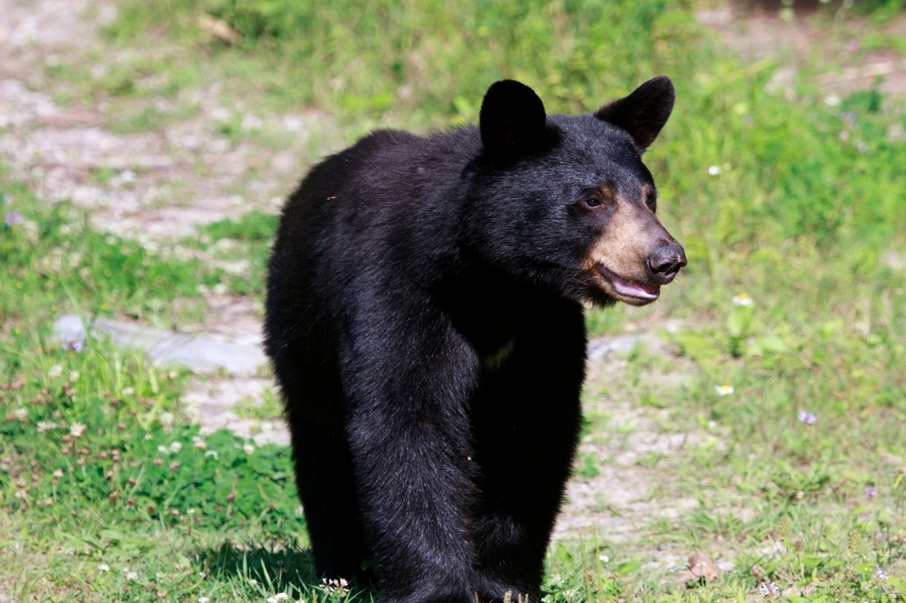
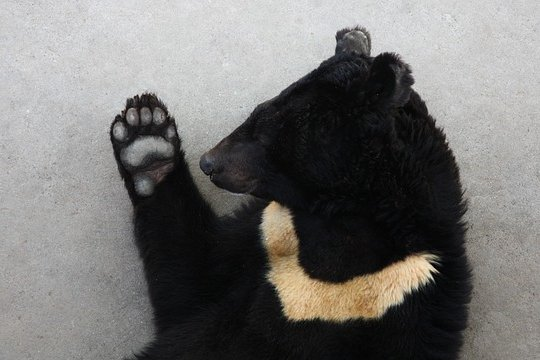
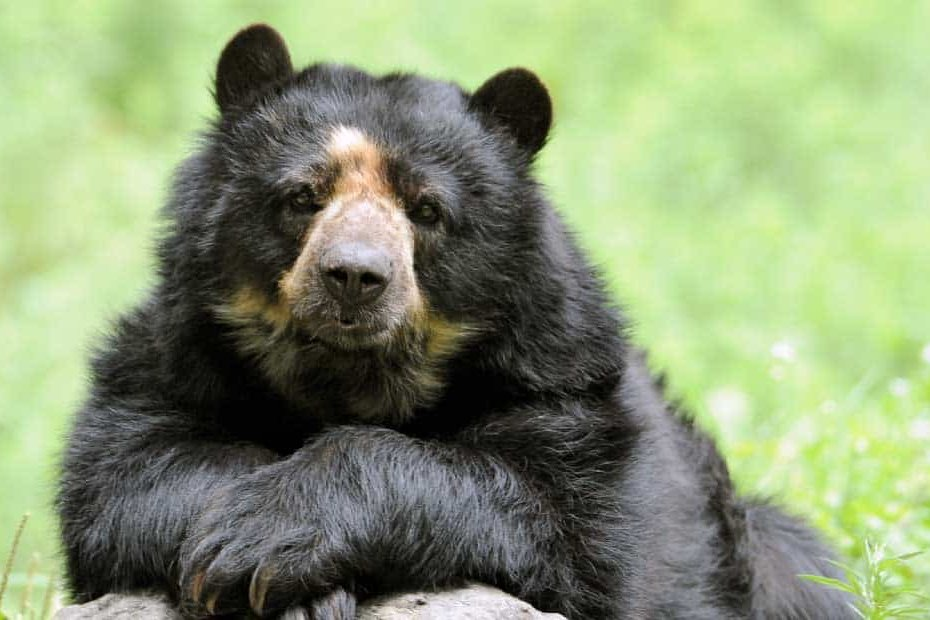
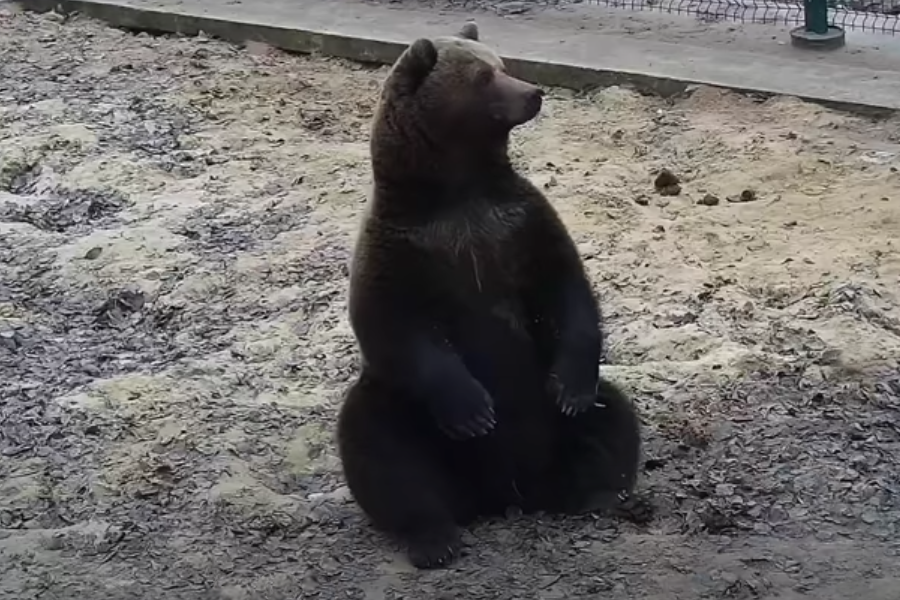

American Black Bear
There are nearly one million black bears in North America!
- Scientific Name: Ursus americanus
- Weight Range: 125-600lbs
- Habitat: Forests, wooded mountains and swamps across the United States, Canada and even parts of Mexico.
- Typical Diet: Omnivore, but 95% plant-based—including grasses, leaves, seeds, nuts, fruits, berries, fish and insects.
In 1902, President Teddy Roosevelt refused to shoot a black bear cub—and the beloved children’s toy was born. Despite the name, this bear comes in other colors like red, brown, cream and even silver.
Sun Bear

Nicknamed “the Honey Bear,” this bear goes crazy for the sweet syrup!
- Scientific Name: Helarctos malayanus
- Weight Range: 55-140 lbs
- Habitat: Tropical forests of southeast Asia, including Thailand, Laos, Myanmar, Cambodia, and Vietnam.
- Typical Diet: Omnivore, favoring tropical fruits, honeycomb, insects, and small rodents, lizards and birds.
The smallest of all bears, this sub-species is named for its distinctive, sun-shaped chest markings. Sun bears spend most of their lives high up in the trees, so they can be hard to see.
Moon Bear
Moon bears are “cousins” (or, related) to North American black bears!
- Scientific Name: Ursus thibetanus
- Weight Range: 85-440 lbs
- Habitat: Conifer and alpine forests and mountains, from China, N. Korea, Japan and Bangladesh to Russia and the Middle East.
- Typical Diet: Omnivore, favoring berries and other fruits, grasses, leaves, seeds, nuts, insects and insect larvae.
Also known as the Asian black bear, moon bears are named for their crescent moon-shaped chest markings. This sub-species is also famous for its thick, black cheek fur which looks like sideburns.
Sloth Bear

Baloo from Disney’s “The Jungle Book” was inspired by the sloth bear!
- Scientific Name: Melursus ursinus
- Weight Range: 120-320 lbs
- Habitat: Tropical forests, savannahs, and low-lying grasslands, including India, Bhutan, Nepal, and Sri Lanka.
- Typical Diet: Omnivore, preferring insects like ants, bees, and termites, though they also love fruits and honey.
Sloth bear jaws are shaped so they can use their lips like straws to suck insects out of tight spaces. Young cubs can be seen catching a ride on Mama’s back—they just grab onto her long, shaggy fur.
Spectacled Bear
These bears got their name from eyeglasses-shaped facial markings!
- Scientific Name: Tremarctos ornatus
- Weight Range: 75-440 lbs
- Habitat: The Andes Mountains of South America—Colombia, Venezuela, Peru, and Ecuador, but also Argentina and Bolivia.
- Typical Diet: Omnivore, and 90-95% plant-based, including cacti, bulbs, palm leaves and nuts, corn, fruit, sugarcane and honey.
They’re also called Andean bears after the mountains and cloud forests they call home. This bear is well adapted to a wide range of weather conditions and can climb sheer rock walls at breathtaking heights
Brown Bear
Brown bears have the greatest size range of any sub-species!
- Scientific Name: Ursus arctos
- Weight Range: 175-1,200+ lbs
- Habitat: Temperate and alpine forests in Canada, Europe, Central Asia, and the western United States.
- Typical Diet: Omnivore but location-dependent—may eat fruits, nuts, grasses, leaves, insects, birds, fish and mammals
This bear sub-species may be called grizzly, Kodiak, Himalayan, or plain ol’ brown bear, depending on location. The muscular hump on its upper back makes it easy to recognize anywhere.
Panda Bear

The panda bear is used as a symbol of China all over the world!
- Scientific Name: Ailuropoda melanoleuca
- Weight Range: 220-230 lbs
- Habitat: Mountain ranges in select parts of China; a large percentage of pandas today live in captivity.
- Typical Diet: Vegetarian, mostly bamboo—although in captivity, its diet may be more varied.
Also called “giant panda” to distinguish it from the unrelated red panda, this sub-species of bear is highly endangered. On a happier note, lots of research is devoted to helping pandas survive and thrive.
Polar Bear

A polar bear’s fur appears white, but it’s actually hollow!
- Scientific Name: Ursus maritimus
- Weight Range: 350-1,500+ lbs
- Habitat: Sea ice, tundra, and oceanic territory within the Arctic Circle, including Alaska, Canada, and Russia.
- Typical Diet: Mostly carnivorous, such as seals, fish, whales, and walrus carcasses; also, eggs, grass and berries.
The polar bear is the largest sub-species of bear in the world. Since they’re excellent swimmers, averaging 80+ miles per day, they’re also considered one of the largest marine mammals on Earth.